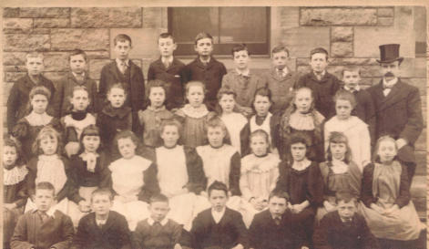
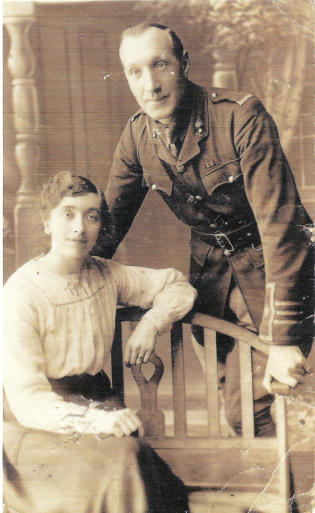

Euphemia (Tot) Addy
Eleanor Brown, who lives in Italy, contacted the Trust to tell us about her Granny who worked for AW Buchan of Buchan Pottery. After lengthy communications, an interesting family story emerged, beginning over 100 years ago. Eleanor’s Granny, Euphemia (known as Tot) Kirkwood Thomson, was born on 21st February 1887 at 9 Mentone Avenue. She was the eldest of four surviving children. She attended Towerbank School and left when she was 13 years old. We think the school photograph was taken in her last year at Towerbank. Tot is on the extreme right of the second row from the front.

She entered service with the Buchan household and worked her way up to become the cook. The Buchan’s regularly held soirees for invited guests, when Mr Buchan played his violin. One evening a group of officers stationed at Piershill Barracks were invited to dinner. Afterwards, one of the officers, Charles Addy, asked who had cooked the meal and Tot was sent for. After complimenting her on his meal, Charles asked if he could walk out with her and she agreed.
Apparently it was love at first sight and Tot ran off to London to be with him, something almost unheard of at that time. She found a job as a lady’s maid and they were married in Woolwich Barracks on 27th August 1914. They can be seen together in the studio photo.

Charles had made his career in the Royal Field Artillery and was a Lieutenant, but Acting Major, through much of World War One. He was awarded the Military Cross and the Greek Military Cross, possibly for his actions in Salonika.
They had two daughters, Dorothy and Helen (Eleanor’s mother), and a son, Charles, who died from meningitis at only 18 months old. By 1923 Charles had been invalided out of the army with tuberculosis and the family moved from London to Dagenham and then Dorset, hoping the air would be better for him. Sadly, Charles died in 1932 leaving Tot to bring up the girls on her own and they returned to Portobello to start a new life. When Eleanor’s mother went out to work during World War Two Eleanor’s granny Tot brought her up. She died in 1960.
(Photographs courtesy of Eleanor Brown)